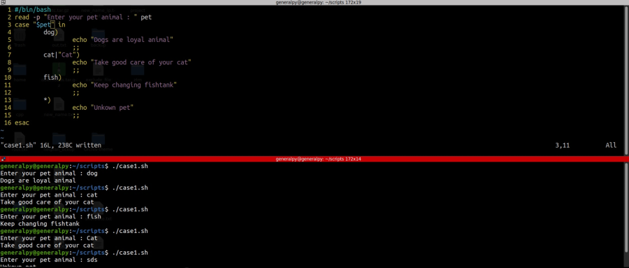

Case statement is just like switch case statement in other programming lanugages.
Syntax is :
case Expression in
pattern1)
#commands
;;
pattern2)
#commands
;;
pattern3)
#commands
;;
*)
#commands
;;
esac
Expression is the expression we want to test and then we patterns, where we can have multiple patterns with | as separator and patterns must end with ). Then we have commands and then that pattern ends with ;;.
In the end we wildcard * which means match anything which can be used like default case.
Let's see some examples.
